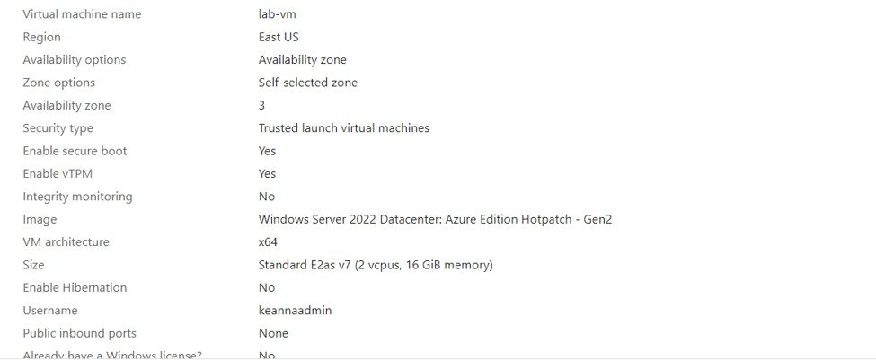
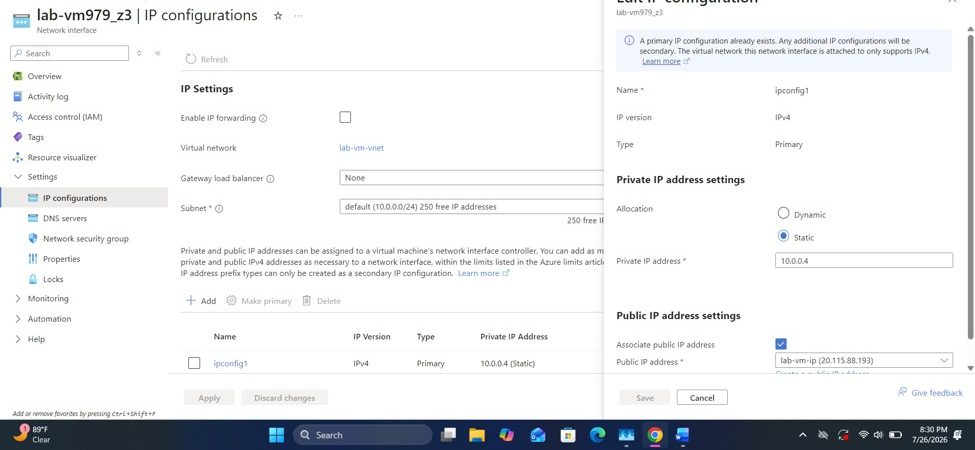
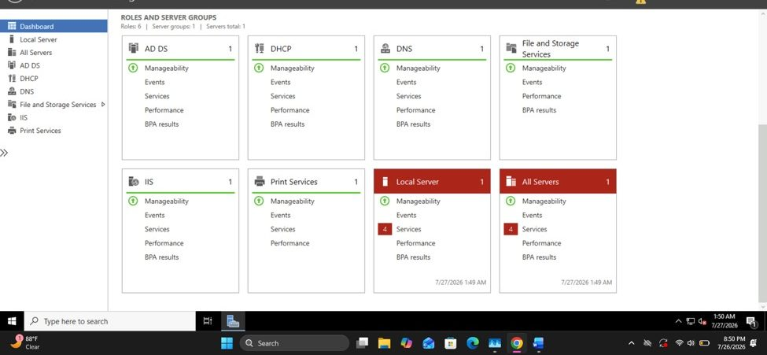
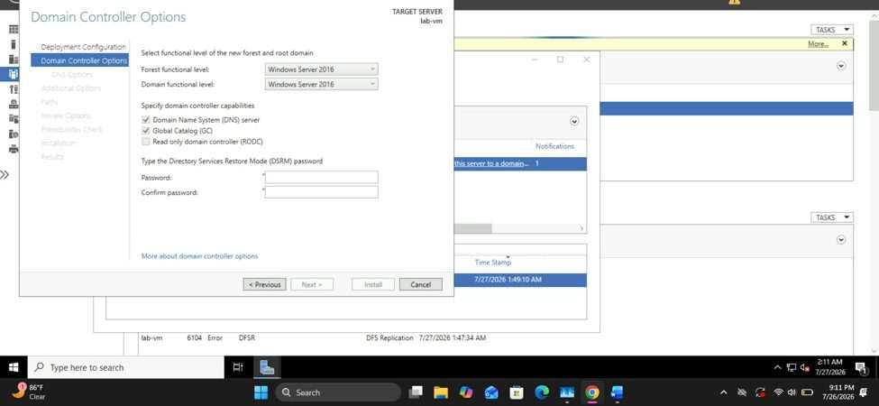
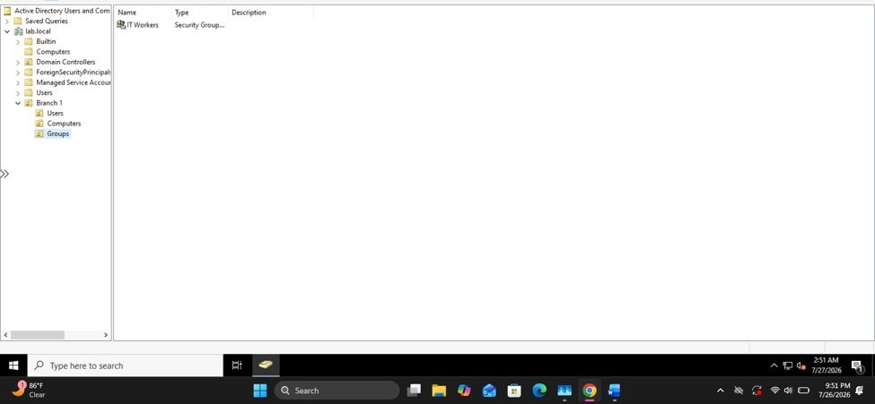
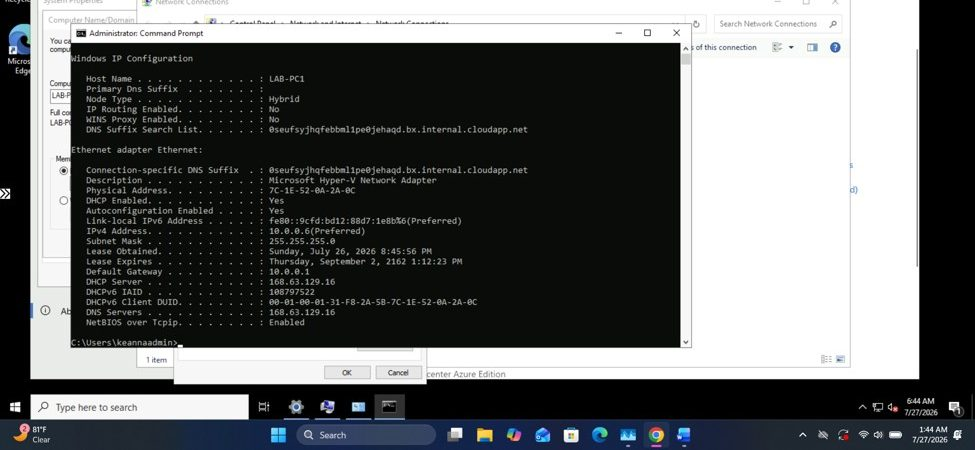
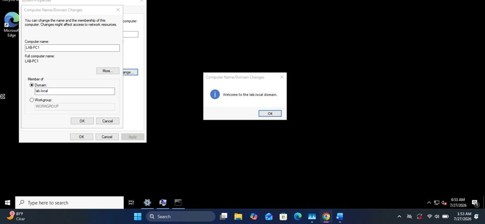
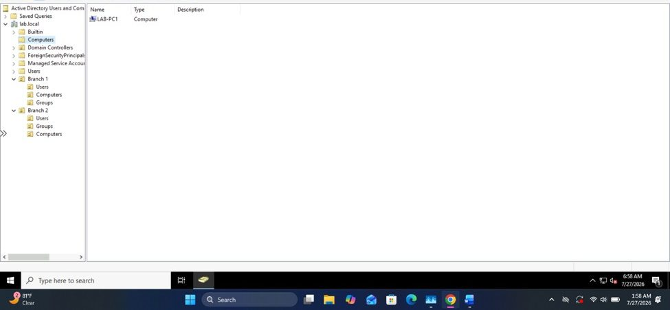

Reproduce, in miniature, the infrastructure a small business or branch office IT environment would actually run: a Windows Server domain controller providing authentication, DNS, and DHCP, and a client workstation joined to that domain and managed through it — built end-to-end in Microsoft Azure rather than local VirtualBox VMs.
Provision the domain controller VM, secure remote access without exposing any public ports, promote it to a domain controller, design an OU structure to reflect a multi-branch organization, populate it with users and groups, and successfully join a second VM to the domain.
How do you secure administrative access to a domain controller without exposing RDP to the internet? What actually has to be true before a client machine can join a domain? And what's the right way to structure OUs so permissions and policy scale cleanly across branches?
The first domain-join attempt failed, which is the expected outcome when DNS isn't resolving correctly — but the dashboard alone didn't say why. Running ipconfig /all on the client showed it was still pointed at Azure's platform DNS service instead of the domain controller, so it could never locate the SRV records Active Directory needs to authenticate a join. That's what actually explained the failure below, not a permissions or credentials issue.
ipconfig /all; DNS server on the client's NIC set explicitly to the domain controller's static IP (10.0.0.4).




IT Workers security group created for group-based permission management.
ipconfig /all confirms the client was still resolving names against Azure's platform DNS (168.63.129.16), not the domain controller.

Screenshots taken directly from the lab build; browser chrome and account details cropped for public disclosure.
"Why did the domain join actually fail, when the wizard just says it failed with no further detail?"
The client NIC's DNS configuration, and the output of ipconfig /all showing which DNS server was actually in use.
A failed domain join could plausibly be a credentials issue, a network connectivity problem, or a firewall/NSG rule blocking the required ports — several different things could produce the same generic failure.
ipconfig /all showed the client was still resolving names against Azure's platform DNS service rather than the domain controller, meaning it could never locate the SRV records AD needs — a DNS problem, not a credentials or connectivity one.
DNS is almost always the root cause when a domain join fails. If a client can't resolve the domain controller by name, nothing else about Active Directory works — checking DNS configuration should be the first troubleshooting step, not the last.